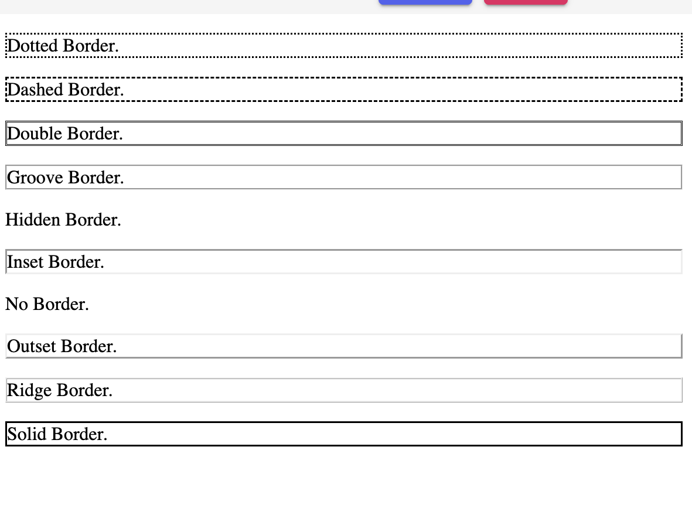
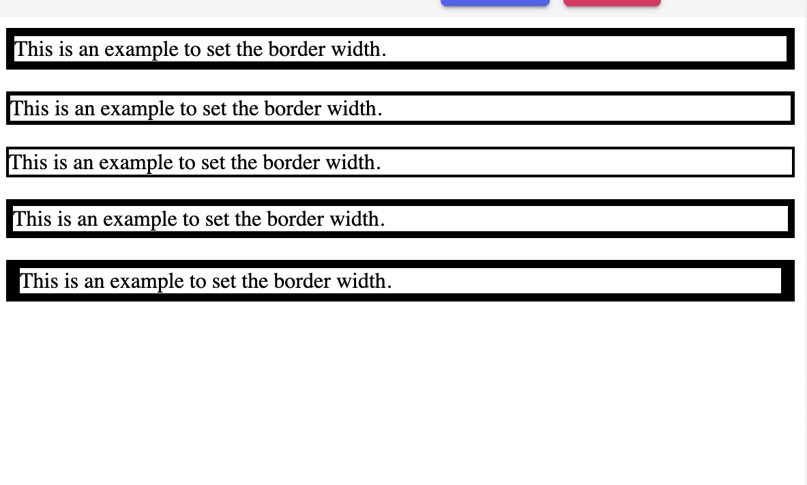
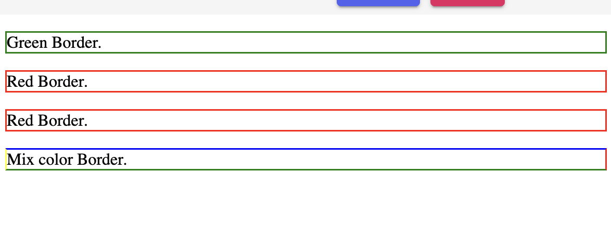

CSS Border: The border property of CSS allows us to define the style, color, width, and radius of the element’s border. It is applied to various elements to set-up the border. Some essential properties of CSS border are as follows:
border-style
border-width
border-color
border-radius
CSS border-style
A border-style CSS property is applied to define the type of border which we want to present inside various web pages.
Some of the essential style values are permitted in this property, which is as follows:
1.dotted: This value is used to specify the dotted border.
2.dashed: This value is used to specify the dashed border.
3.double: This value is used to define two borders along with a similar border-width value.
4.groove: This value is used to specify the 3D grooved border. Its effect leans on the value of border-color.
5.hidden: This value is used to specify the hidden border.
6.inset: This value is used to specify the 3D inset border. Its effect leans on the value of border-color.
7.none: This value is used to specify no border.
8.out set: This value is used to specify the 3D out set border. Its effect leans on the value of border-value.
9.ridge: This value is used to specify the 3D ridged border. Its effect leans on the value of border-color.
10.solid: This value is used to specify the solid border.
This property of CSS may have one to four values. These values are left border, right border, top border, and the bottom border.
Example:
<!DOCTYPE html>
<html>
<head>
<style> p.dotted {border-style: dotted;} p.dashed {border-style: dashed;} p.double {border-style: double;} p.groove {border-style: groove;} p.hidden {border-style: hidden;} p.inset {border-style: inset;} p.none {border-style: none;} p.outset {border-style: outset;} p.ridge {border-style: ridge;} p.solid {border-style: solid;}
</head>
<body>
<p class="dotted">Dotted Border. </p>
<p class="dashed">Dashed Border. </p>
<p class="double">Double Border. </p>
<p class="groove">Groove Border. </p>
<p class="hidden">Hidden Border. </p>
<p class="inset">Inset Border. </p>
<p class="none">No Border. </p>
<p class="outset">Outset Border. </p>
<p class="ridge">Ridge Border. </p>
<p class="solid">Solid Border. </p>
</body> br
</html>
output:

The CSS border-width property is applied on the web pages to fix the width of the border.
It can be set-up in pixels. We can also use the three values to set-up the border-width property, which is as follows:
Thin
Medium
Thick
This property can’t be applied alone. It is always applied with other properties, if borders such as “border-style” are used for setting the border. Otherwise it will be useless.
<DOCTYPE html>
<html>
<head>
<style>
p.one { border-style: solid; border-width: 6px; }
p.two { border-style: solid; border-width: medium; }
p.three { border-style: solid; border-width: 2px; }
p.four { border-style: solid; border-width: thick; }
p.five { border-style: solid; border-width: 6px 10px; /*Some particular Side widths*/ }
</style>
</head>
<body>
<p class="one">This is an example to set the border width.</p>
<p class="two">This is an example to set the border width.</p>
<p class="three">This is an example to set the border width.</p>
<p class="four">This is an example to set the border width.</p>
<p class="five">This is an example to set the border width.</p>
</body>
</html>
Output:

The CSS border-color is applied to set the border’s color. Here, we can do this by one the following three types:
Name: This method is used to define a color name. For-example: “green”.
RGB: This method is used to define the color’s RGB value. For-example: “rgb(255,0,0)”.
HEX: This method is used to define the color’s hex value. For-example: “#ff0000”.
Transparent: When the color of the border is not fixed then it inherits through its element’s color property.
This property can’t be applied alone. It must be applied along with other properties like “border-style”.
Example:
<!DOCTYPE html>
<html>
<head>
<style>
p.color1 { border-style: solid; border-color: green; }
p.color2 { border-style: solid; border-color: #ff0000; }
p.color3 { border-style: solid; border-color: rgb(255,0,0); }
p.color4 { border-style: solid; border-color: blue red green yellow; }
</style>
<body>
<p class="color1">Green Border.</p>
<p class="color2">Red Border.</p>
<p class="color3">Red Border.</p>
<p class="color4">Mix color Border.</p>
</body>
</html>
Output:
